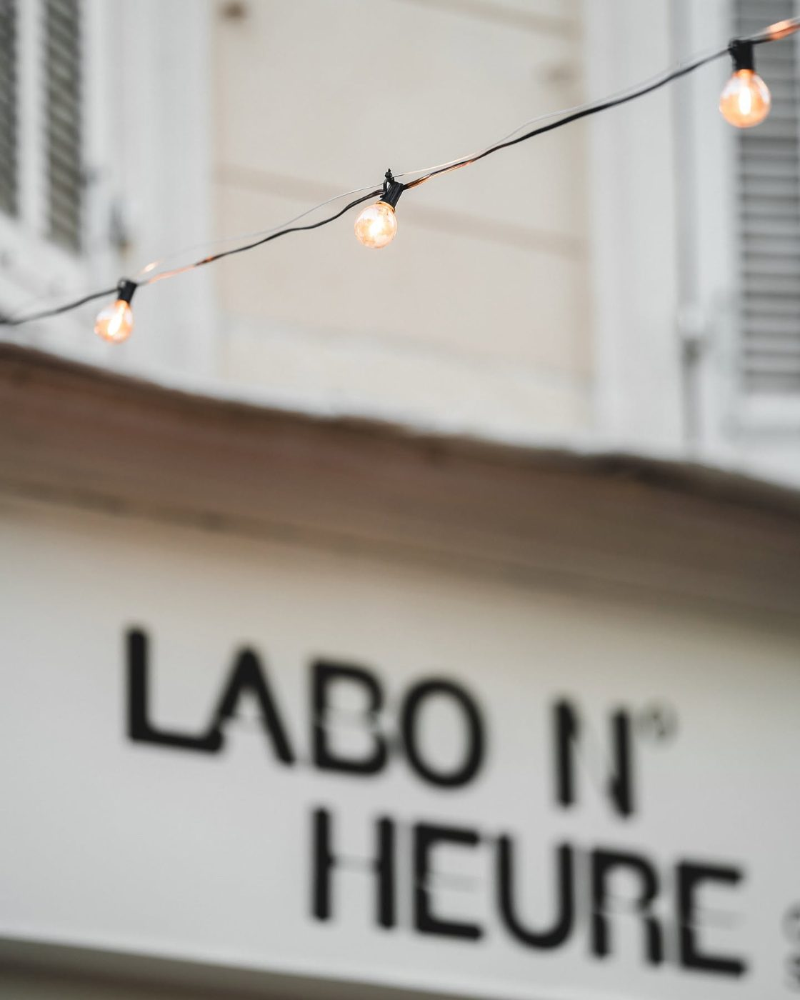

Cinq pistes,
même ADN.
D et E suivent la doctrine « awwwards » : système tonal, une seule courbe d'animation, un accent à 10 %, curseur et reveals. A, B, C sont les premières maquettes. Même palette (chaux, kraft, terre cuite, encre), même typo, mêmes photos. Ce qui change : le moment fort et la structure. À regarder sur ordinateur d'abord, puis sur téléphone.
 D — Nuit chaude ★
D — Nuit chaude ★Noir chaud, wordmark bicolore, image flottante
Hero asymétrique, la niche en colonne bleed. Liste des numéros où la photo suit le curseur. Une section chaux qui respire, puis la niche plein écran : « Allumées. »
- Le plus « démo desktop » des cinq
- Curseur custom, boutons magnétiques, grain
- Mobile : image flottante désactivée, reste propre

E — Chaux & Terre ★Clair, éditorial, wordmark qui traverse l'écran
Hero épinglé : le titre géant et une bande de photos défilent horizontalement au scroll. Grille asymétrique des numéros, flip sombre sur les niches, équipe en typo bord à bord.
- Le plus fidèle à leur Instagram (chaux, lumière de jour)
- Chiffres en contour, reveals clip-path
- Mobile : hero redevient vertical
A — NichesLe mur de niches devient le site
Fond chaux, mur terre cuite, chaque cocktail dans une niche cintrée qui s'allume quand on passe. Le hero reprend la photo signature.
- Reconnaissable instantanément par Zak & Marine
- Motif déclinable (cartes, boutons, photos)
- Option WebGL sur desktop plus tard
 B — Kraft & Numéros
B — Kraft & NumérosÉditorial, typo énorme, menus kraft
Le wordmark en plein écran, les cocktails en liste numérotée avec la photo qui apparaît au survol, les cartes kraft empilées comme sur le comptoir.
- Le plus rapide et le plus léger
- Excellent sur mobile (c'est du texte)
- Moins de « wow » photo seul
 C — Calanque
C — CalanqueUn film qu'on fait défiler
Quatre chapitres pilotés par le scroll : la place, le labo, les niches, les numéros. Ici avec des photos ; avec les vidéos Instagram ce sera un vrai scroll-scrub.
- Impact maximal pour la démo desktop
- Dépend des vidéos, plus lourd
- Risque : parler de Marseille plus que du bar
Contenus provisoires : ingrédients, prix et horaires inventés pour la maquette, à remplacer par la vraie carte. Wordmark en Archivo Black en attendant la vectorisation du vrai lettrage. Photos : Instagram @labo_n.h.